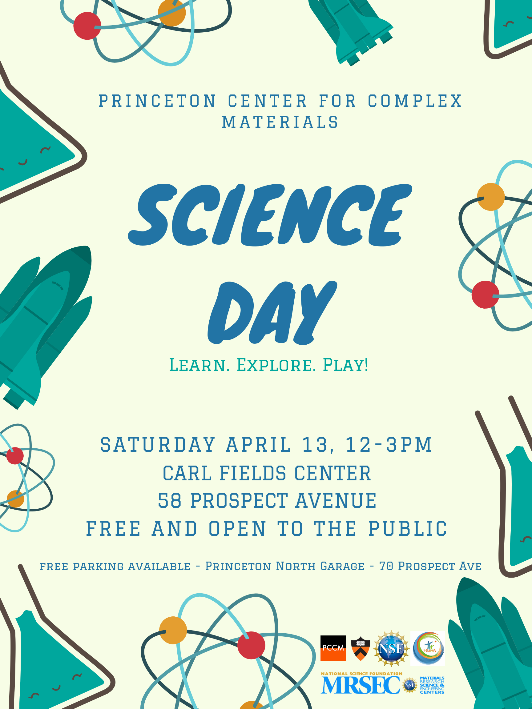
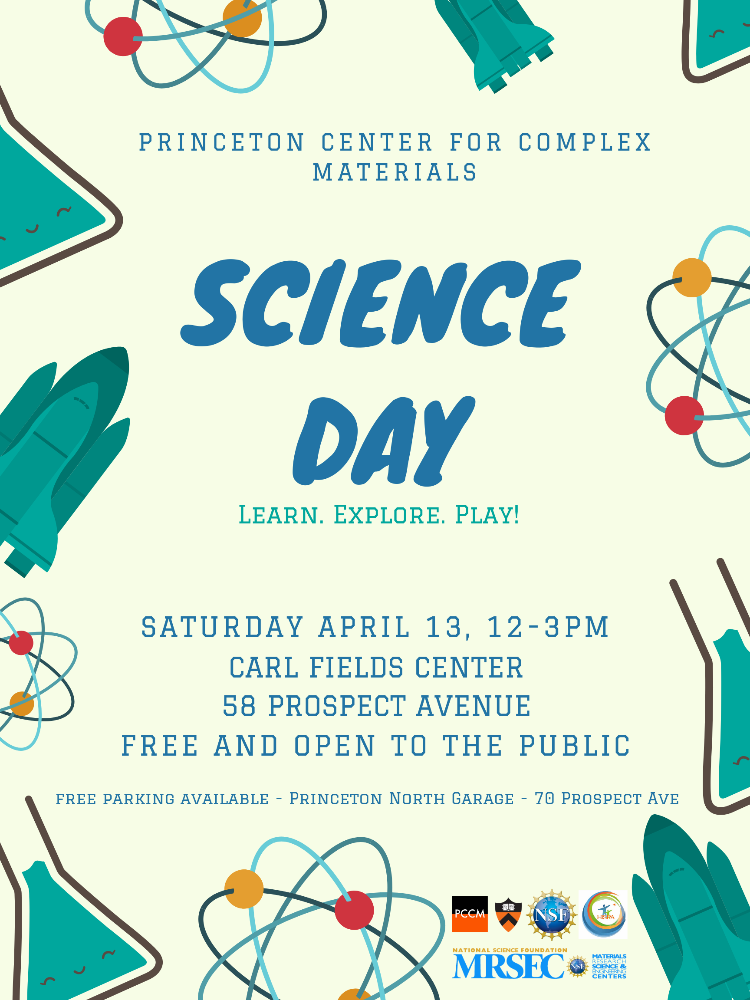
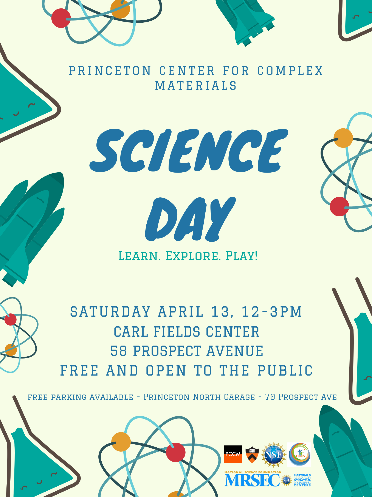

Promotional Materials

 >
>


 

I am a Science Communication Specialist passionate about science education, writing and language, with a specific interest in the semiotics of science and demo development. During my years at Princeton University, I have worked as Education Outreach Coordinator overseeing over 20 annual science programs for a wide array of audiences and with a focus to serve under-represented minorities and low-income families. Among the projects I have led are: science days and shows for the public; Materials Academies for middle- and high-school students, Research Experiences for Undergraduates (REU); industrial seminars, conferences, summer schools and symposia for graduate students, postdocs and faculty.
Moreover, I have reached hundreds of researchers from the USA and beyond through my Science Communication and Education Workshops at several different institutions and conferences in the United States (for now). It is my desire to make science accessible to all, to bring all of my US-based efforts to Europe and to facilitate environments of excelence and togetherness through science and scholarship.
All materials and documents in this portfolio have been created by Sara Rodriguez Martinez.
Science communication paper on the history and philosophy behind the discovery of radioactivity, and how this change of paradigm affected the field of Phyiscs. Based on the readings of Hellman (1998) and many more.
View DocumentIs science a collection of facts? Is it the search to discover things? I explore these classical questions of science epistemiology through the works of Latour and Wolgar (1986), Popper (1959) and more.
View DocumentThe world of working has evolved through scientific revolutions; jobs are new today and obsolete tomorrow. What can we expect 20+ years from now?
View DocumentWhat forms science? Can we find patterns, cycles in its progress? These are some of the questions that I explore in this essay.
View Document
>

Our current means of communication have evolved immensely in the past centuries. Through this slideshow, I presented my research on the evolution of radio and television until today's means of communication (social media and more) and analyzed how these evolutions have shaped human interactions. View Presentation
There are a lot theories about what the future holds, especially regarding the future of work and technology. I developed this interactive, text-based game based on the findings of my literature review and conversations with experts about this topic, described in much more detail in the homonymous writing sample above. View Project
I have several other relevant presentations regarding science communication, writing and education, but due to the sensitive data contained in them, I cannot share them publicly. Please contact me for more information on these presentations.
Please feel free to email me at SRMARTINEZ20[AT]gmail.com